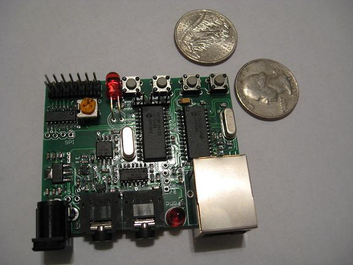

A weblog focused on interesting circuits, ideas, schematics and other information about microelectronics and microcontrollers.
E-books
Disclaimer
Because I have not tested all electronic circuits mentioned on this pages, I cannot attest to their accuracy; therefore, I do not provide a warranty of any kind and cannot be held responsible in any manner.
Audio
SD Audio Player with ATTiny
8. August 2010 - 14:37 — adminThis is a simple SD audio player biult with only an 8-pin microcontroller (ATTiny85).

SIDstick: vintage tunes in your pocket
21. April 2010 - 20:55 — adminThe SIDstick is a pocket-sized chiptunes player from Gadget Gangster.

Image: Gadget Gangster web
mbed Audio Effects
3. April 2010 - 11:53 — adminAn audio echo/delay effect “pedal” built around an mbed kit (based on ARM LPC1768).
(Photo: Ivan Sergeev)
Waveform display on a VGA monitor with AVR
16. January 2010 - 16:29 — adminNot so useful, but nice: "Waveform display" (like a oscilloscope) on a VGA monitor.

(Photo: 5volt.eu)
DIY USB Sound card, vol. II
6. January 2010 - 2:28 — adminAnother attempt to make an USB sound card based on TI's PCM2704 chip by Miroslav Batek.
Homebrew VoIP server on a PIC
6. October 2009 - 16:19 — adminA homemade web server with VoIP capability... Unbelievable? Not at all.

Audio gesture recognition
7. May 2009 - 5:35 — adminA new MCU-based project from Cornell University. It utilizes a microphone placed in a stethoscope to recognize various gestures when a fingernail is dragged over a surface (an original idea, isn't it?).

Glade - AVR audio library
5. February 2009 - 20:33 — adminGlade is a simple, easy-to-use, 8-bit audio library for the Arduino. It allows you to play sound on the pin 11 of the Arduino board using PWM.